I created a graphical interface for an application that helps people who want to donate blood or people who need blood.
4.5 million Americans will a need blood transfusion each year. 43,000 pints: amount of donated blood used each day in the U.S. and Canada. Someone needs blood every two seconds. Only 37 percent of the U.S. population is eligible to donate blood - less than 10 percent do annually.
Every two seconds someone in the U.S. needs blood. It is essential for surgeries, cancer treatment, chronic illnesses, and traumatic injuries. Whether a patient receives whole blood, red cells, platelets or plasma, this lifesaving care starts with one person making a generous donation.
I set out to create a mobile app to help people who are looking for a donation center and people who need blood.
The application opens with the home page, from where a user can log in or create an account. After authentication, he is redirected to the profile page, and then he can navigate between pages using the menu: he can read useful information about blood donation and its benefits, he can search on the map the center where he wants to donate blood and read information about it and he can view / add people who need blood.
The application contains 15 pages.
The Start page offers the possibility for a new user to create an account or users with an existing account to log in.
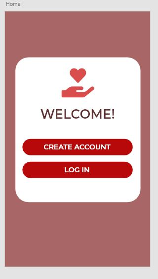On this page, the user can create an account by entering personal data such as name, address, blood type, email and a password.
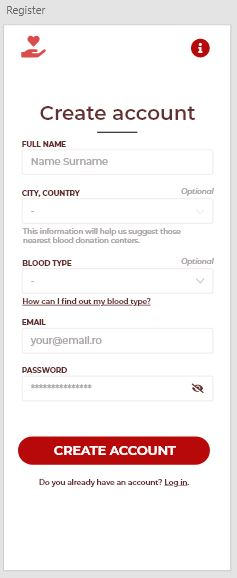On this page the user can log in using the email and password.
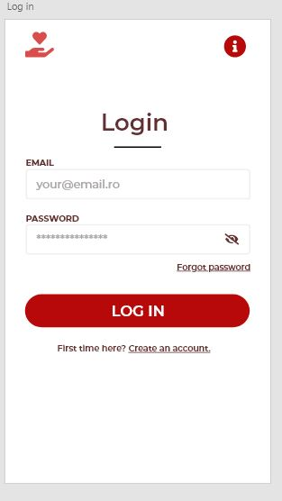Once the user has logged in, or created their account, they will be redirected to their profile page, where they can see the next date they will be able to donate blood, their notifications and donation history.
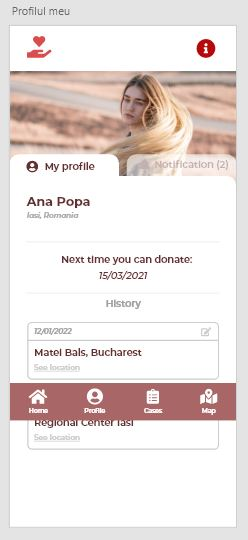This page contains a multitude of cases of people in need of blood, providing information about each of them.
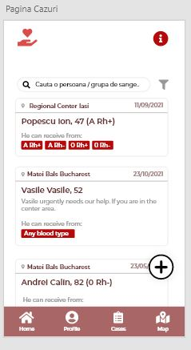By pressing the "+" button on the Cases Page we will be redirected to this page. This page allows us to add a new case of a person in need of blood to the database. The information that has to be entered is: name and age, blood type, hospital where he is hospitalized and optionally a short description of his illness.
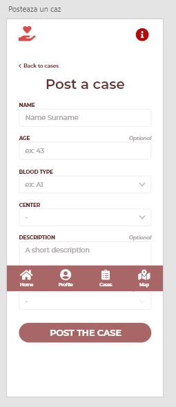To make it easier to search for a specific patient or blood type, the app allows us to select filters to make the search more efficient.
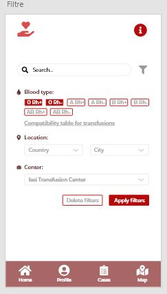This page shows us the people who need blood and who meet the conditions we have chosen.
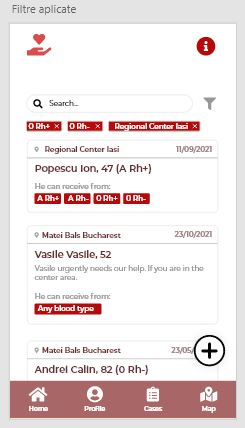To view a person's case in detail, we can click and we will be directed to this room. Here we are presented in full details about the patient and his needs.
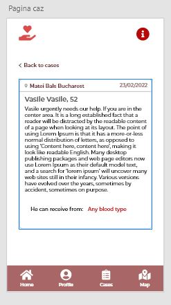This page shows us a map of the centers we can donate to. And by clicking on a donor center we will be shown information about it: address, phone number, availability and how many people need blood in that center.
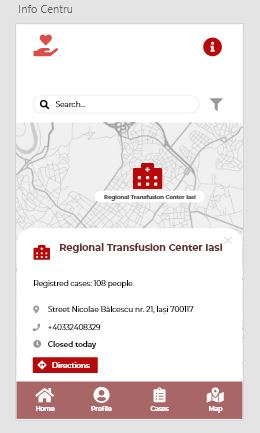We can also filter the search for donation centers. We can select a maximum distance and the application will generate centers that are close to our location.
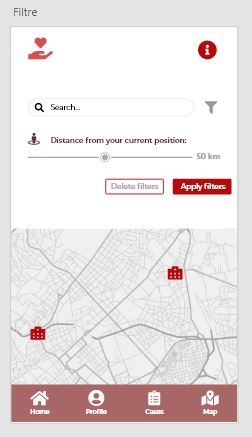This page contains 3 buttons that will direct the user to one of the information pages.
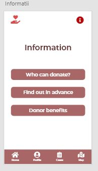This page contains the blood type compatibility table. It also contains information on the conditions that must be met in order to donate.
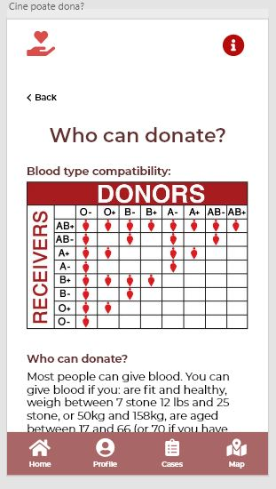It is very important to know what to do before and after donating blood. This page contains all the information you need to know in order to take care of us both before and after our donation.
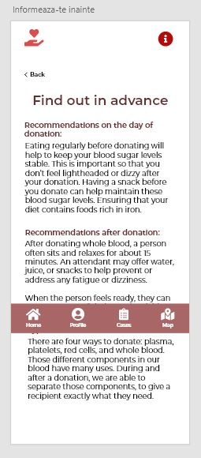There are many health benefits to donating blood. On this page I have listed some of them.
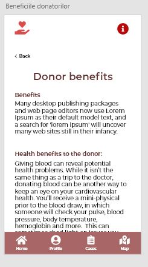